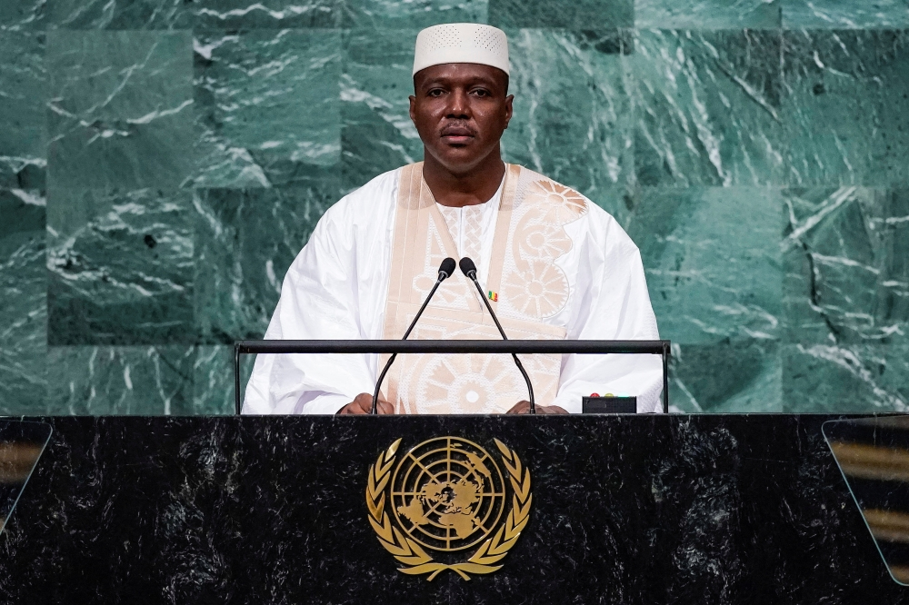
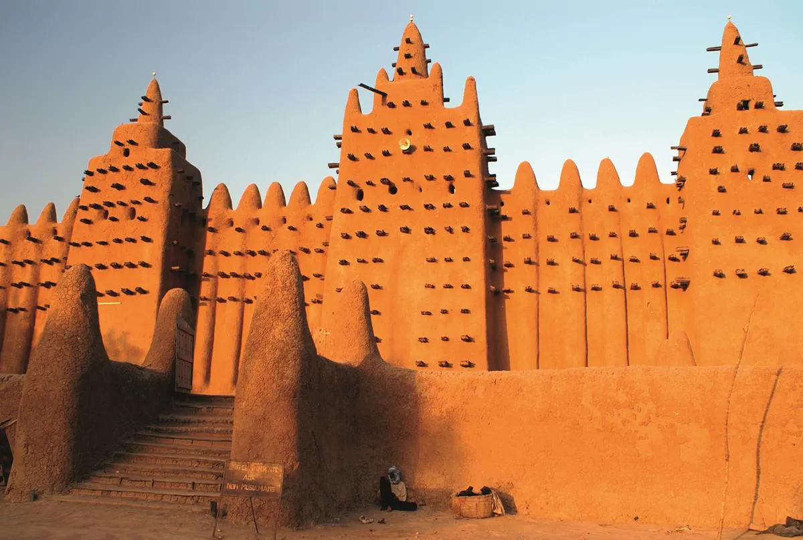
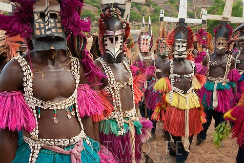

Contents
.webp)
Current Prime Minister
ABDOULAYE MAIGA
Capital city
BAMAKOAbout Mali
Mali is a landlocked country in West Africa, bordered by Algeria, Niger, Burkina Faso, Côte d'Ivoire, Guinea, Senegal, and Mauritania. Its capital city is Bamako, which is also the largest city and the center of government and trade.
Mali has a rich history and was once home to powerful empires such as the Mali Empire, which flourished between the 13th and 16th centuries. During this time, cities like Timbuktu became important centers of learning, trade, and culture in Africa.
The country's geography includes vast deserts in the north, as part of the Sahara, and more fertile land in the south. The Niger River flows through Mali and plays a vital role in agriculture, transportation, and daily life.
Mali's culture is diverse, with many ethnic groups such as the Bambara, Fulani, and Tuareg. Music is especially important in Malian culture, and the country is known worldwide for its traditional musicians and instruments.
.webp)

- Bamako
- Capital and largest city, located along the Niger River.
- Sikasso
- An important agricultural and commercial center.
- Mopti
- Known as a major port city on the Niger River.
- Gao
- Historic city and former center of the Songhai Empire
- Timbuktu
- Famous for its ancient manuscripts and Islamic learning.
Cultures of Mali
Mali has a rich and diverse culture shaped by many ethnic groups, including the Bambara, Fulani, Dogon, Tuareg, and Songhai. Each group has its own language, traditions, music, and way of life, making Mali culturally very diverse.
Music is one of the most important parts of Malian culture. The country is world-famous for its traditional musicians called griots, who preserve history through storytelling, singing, and instruments like the kora and ngoni. Malian music has influenced many global artists.
Religion also plays a major role in daily life. Islam is the dominant religion, and Islamic traditions are widely practiced. Festivals and religious events are important community gatherings.
Traditional clothing varies across regions, but many people wear colorful garments made from cotton fabric. These clothes are often worn during ceremonies, celebrations, and festivals.

| Fact | Description |
|---|---|
| Location | Mali is a landlocked country in West Africa. |
| Capital City | The capital city is Bamako. |
| Major River | The Niger River is the most important river in Mali. |
| History | Mali was home to the powerful Mali Empire in the Middle Ages. |
| Famous City | Timbuktu is known for ancient learning and trade. |
| Languages | French is the official language, along with many local languages. |
| Religion | Islam is the dominant religion in Mali. |
| Economy | Mali's economy is based on agriculture and gold mining. |
| Culture | Mali is famous for music, storytelling, and griot traditions. |